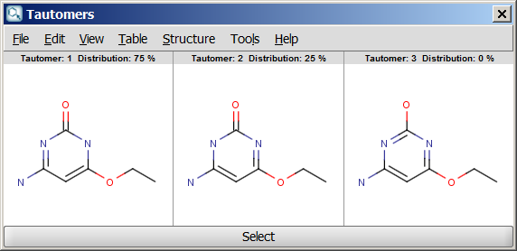
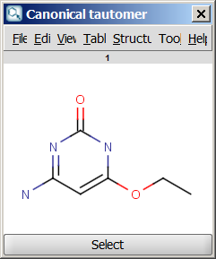
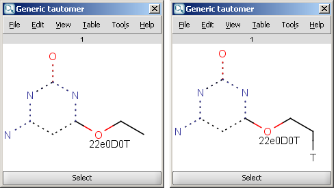
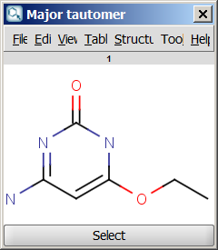
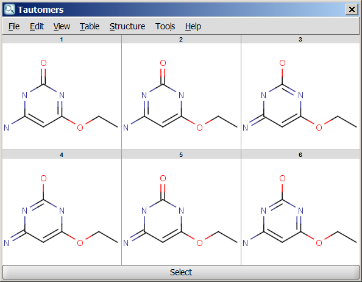

Advanced options
Note: the number of generated tautomers strongly depends on the options chosen.
- Decimal places: setting the number of decimal places with which the tautomer distirbution values are given.
- Set max. allowed length of the tautomerization path; Path length: sets the number of bonds which are considered by displacing a double bond.
- Protect aromaticity: if checked (default), the aromaticity will be maintained.
- Protect charge: if checked (default), defined charged atoms maintain their charge during calculation.
- Exclude antiaromatic compounds: if checked (default), any tautomer structure having an antiaromatic ring system will be discarded.
- Protect double bond stereo: if checked, all double bonds with stereo information remain intact. If unchecked (default), tautomer regions will lose the double bond stereo information, any other stereo information in the molecule is kept intact.
- Protect all tetrahedral stereo centers: if checked, stereocenters are not included in the tautomerization. If unchecked (default), tautomer regions will lose the tetrahedral stereo information, any other stereo information in the molecule is kept intact.
- Protect labeled tetrahedral stereo centers only: if checked, stereocenters labeled with chiral flag or MDL Enhanced Stereo Represenation flags will not be included in tautomerization, other stereocenters will.
- Single fragment mode: if checked (default), the results are displayed in separate windows, if unchecked, the calculation handles unlinked molecules together and results are in the same window.
- Protect ester groups: if checked, ester is not taking part in tautomerization.
- Ring-chain tautomerization is allowed: this option can be activated when "All tautomers" function is selected. If it is checked, tautomer generation will take into account the possibility of ring closure.
For example, the following structures are the calculated tautomers of 4-amino-6-ethoxypyrimidin-2-ol:
| Dominant tautomer distribution |  |
| Canonical tautomer |  |
| Generic tautomer and an isotope labelled example |  |
| Major tautomer |  |
| All tautomers |  |
Stereoisomers Generator Plugin
The Stereoisomers Generator Plugin produces all possible stereoisomers of a given compound. The plugin handles both tetrahedral and double bond stereo centers.
 |
- Generate
- Tetrahedral stereo isomers: only the R/S isomers are generated.
- double bond stereo isomers: only E/Z isomers are generated.
- both: both R/S and E/Z isomers are generated.
- Generate all stereoisomers: all isomers are generated
- Generate maximum: only the given number of structures are generated.
- Protect tetrahedral stereo centers: if checked, preset stereocenters are not included in the stereoisomer generation.
- Protect double bond stereo: if checked, all double bonds with preset stereo information remain intact.
- Filter invalid 3D structures: sterically restricted isomers are discarded.
- Display in 3D: results are displayed in a 3D viewer.
Results are displayed in a 2D viewer by default:
 |
To replace your drawn molecule in the sketcher with any of the isomers shown, click on the structure then press "Select" at the bottom of the cells (the result window will be closed).
If "Filter invalid 3D structures" option is switched on in the Stereoisomers Options panel, the stereoisomers can also be displayed in 3D.
 |
References
- Smith, M. B.; March, J. Advanced Organic Chemistry, 5th ed., Wiley Interscience, New York, 2001; pp 1218-1223. ISBN 0471585890